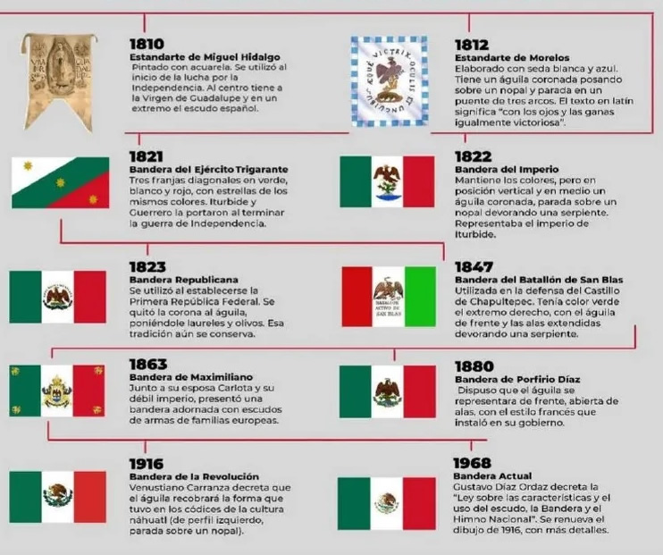

Banderas de México
Dentro de las banderas de América, México es uno de los países más peculiares. Y es que para hablar sobre la evolución histórica de la bandera de México debemos comenzar hablando sobre la bandera del país desde su independencia en 1810 hasta la actualidad, ya que la bandera ha sufrido numerosas variaciones desde entonces. Las banderas mexicanas desde 1810 son las siguientes:
- Bandera de 1810: La bandera usada por los insurgentes liderados por Miguel Hidalgo. La bandera consta de un águila en el centro de un paisaje y rodeada de armas y banderas.
- Bandera de 1815: Conocida como la Bandera de Guerra de México fue creada por el gobierno mexicano en 1815 y constaba de un fondo de cuadros blancos y azules enmarcados en rojo y con un escudo en el centro.
- Bandera de 1821 a 1823: Es considerada como la primera bandera nacional de México. Tres franjas verticales de color verde, blanco y rojo en cuyo centro se encuentra un águila coronada.
- Bandera de 1823 a 1835: El cambio del Imperio Mexicano a la Primera República de México trajo el cambio de la corona del águila por unos olivos y laureles para representar la República.
- Bandera de 1835 a 1846: Utilizada tras la llegada al poder del partido conservador que apenas realizó cambios en la bandera.
- Bandera de 1846 a 1857: La pérdida de apoyos a los conservadores y
- Bandera de 1857 a 1864: La creación de la Constitución de 1857 trajo un cambio en el águila de la bandera, aunque el cambio fue mínimo.
- Bandera de 1864 a 1867: Con la llegada del Segundo Imperio se mantiene la tricolor, pero se cambia el símbolo del centro con una especie de corona para simbolizar el imperio.
- Bandera de 1867 a 1880: Tras el fin del imperio se volvió a traer la bandera de 1857.
- Bandera de 1880 a 1893: El presidente mexicano de la época, Porfirio Díaz, hizo algunos cambios en el escudo del centro de la bandera.
- Bandera de 1893 a 1916: El presidente cambió el escudo a la llamada Águila del Centenario.
- Bandera de 1916 a 1934: Tras la marcha del presidente Díaz se vuelve a cambiar la bandera y el águila se coloca de perfil.
- Bandera de 1934 a 1968: Se vuelve a cambiar el escudo envolviendo al águila en un laurel.
- Bandera actual de México: Desde 1968 hasta la actualidad la bandera se ha mantenido, siendo tricolor verde, blanco y rojo con un águila de perfil sobre un laurel en la zona blanda.

puedes seleccionar un mapa